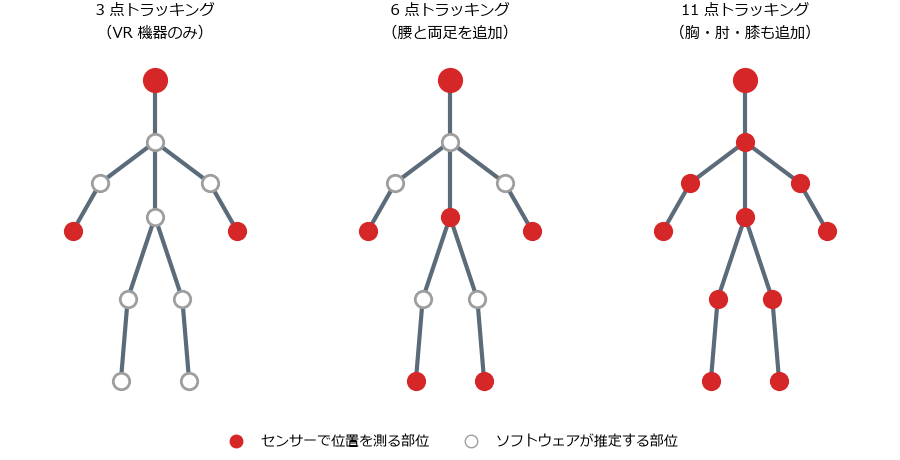

9. もっと楽しむために
VRChat に慣れてきたら、さらに楽しむための方法がある。本章では、トラッキング、有料要素、周辺ツールを紹介する。いずれも必須ではなく、興味を持ったときに検討すればよい。
9.1. トラッキングの種類
トラッキングは、体の部位の位置や向きを測り、アバターの動きに反映する技術である。一般的な VR 機器では、頭（VR 機器本体）と両手（コントローラー）の 3 か所の位置を測る。これを 3 点トラッキングと呼ぶ。3 点トラッキングでも、ソフトウェアが残りの部位の動きを推定するため、アバターは全身で動く。ただし、足の動きや、座る、寝転ぶといった姿勢は、実際とは異なるものになりやすい。
腰や足などにトラッキング用の機器（トラッカー）を追加すると、全身の動きをより正確にアバターに反映できる。これをフルボディトラッキングと呼ぶ。図 9.1 に、トラッキングの方式による違いを示す。

図 9.1 トラッキングの方式による、位置を測る部位の違い
体の動き以外を測るトラッキングもある。主なトラッキングの種類を次の表にまとめる。
種類 |
内容 |
必要なもの |
|---|---|---|
3 点トラッキング |
頭と両手の位置を測る。 |
VR 機器のみ |
フルボディトラッキング |
頭と両手に加えて、腰や足などの位置を測る。足を使った動きや、座る、寝転ぶといった姿勢を反映できる。 |
トラッカー |
ハンドトラッキング |
コントローラーを持たずに、手や指の動きをカメラで読み取る。 |
対応する VR 機器 |
アイトラッキング |
視線の動きを読み取り、アバターの目の動きに反映する。 |
対応する VR 機器 |
フェイストラッキング |
口や頬など、顔の表情の動きを読み取り、アバターの表情に反映する。 |
対応する VR 機器や専用の機器、連携ツール |
アイトラッキングとフェイストラッキングは、対応するアバターでなければ反映されない。
9.2. フルボディトラッキングの方式
フルボディトラッキングに使うトラッカーには、いくつかの方式がある。
方式 |
特徴 |
注意点 |
|---|---|---|
ベースステーション方式 |
部屋に設置した装置（ベースステーション）が出す光をトラッカーが受け取り、位置を測る。精度が高い。 |
ベースステーションの設置が必要で、費用が高い。PC VR が前提となる。 |
慣性センサー方式 |
トラッカーに内蔵された慣性センサーで、体の傾きや動きを測る。設置が不要で、比較的手ごろなものが多い。 |
時間がたつと、測った姿勢と実際の姿勢がずれていくことがあり、ときどき補正が必要になる。 |
カメラ方式 |
カメラで撮影した映像から、体の姿勢を推定する。トラッカーを体に着ける必要がない。 |
精度は他の方式に劣ることが多く、カメラに映らない姿勢は測れない。 |
フルボディトラッキングは、ダンスのイベントや、寝転んでくつろぐ場面などで特に効果を発揮する。費用もかかるため、VRChat に慣れてから、自分の遊び方に必要かどうかを考えて導入するとよい。
9.3. VRChat+ などの有料要素
VRChat は基本無料だが、任意の有料要素がある。
- VRChat+
VRChat+ は、VRChat の運営を支援する月額または年額の会員制度である。執筆時点の価格は月額 9.99 米ドル、年額 99.99 米ドルであり、購入する場所や地域によって実際の金額は異なる。加入すると、お気に入りに登録できるアバターの数が増える、プロフィールの画像を自由に設定できる、グループを作成できるなどの特典がある。特典の内容は変わることがあるため、加入前に公式情報で確認してほしい。
- VRChat Credits
VRChat Credits は、VRChat の中で使う通貨である。アバターマーケットプレイスでのアバターの購入や、作者が販売する商品の購入などに使う。現金で購入する。
いずれも、加入や購入をしなくても VRChat の主要な機能は利用できる。まずは無料の範囲で楽しみ、気に入ったら検討すればよい。
9.4. 周辺ツール
VRChat の外部で動くツールと連携して、遊び方を広げることもできる。
- OSC 連携
VRChat は、OSC（Open Sound Control）という通信の仕組みに対応しており、外部のプログラムとデータをやり取りできる。たとえば、外部のツールからチャットボックスに文字を表示したり、心拍計の値をアバターに表示したり、フェイストラッキングの情報をアバターに反映したりできる。
- 非公式の補助ツール
フレンドの状況を一覧で確認するツールや、撮影した写真を整理するツールなど、有志が作った補助ツールがある。これらは VRChat の公式のツールではない。利用する場合は、信頼できる入手先かどうかを確かめ、アカウントの情報を不用意に入力しないなど、自己責任で慎重に扱う。